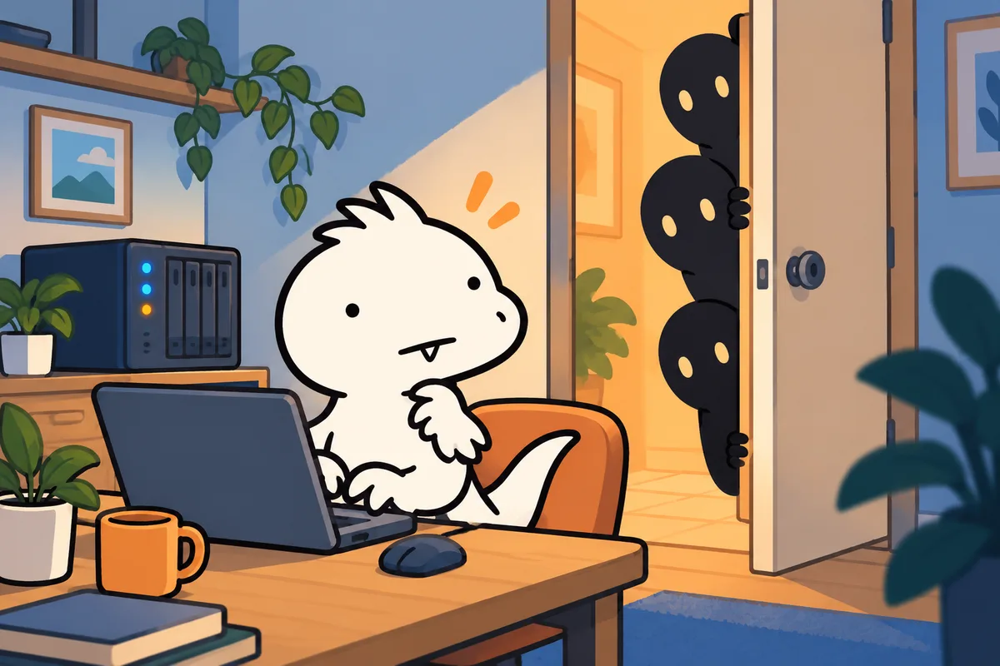
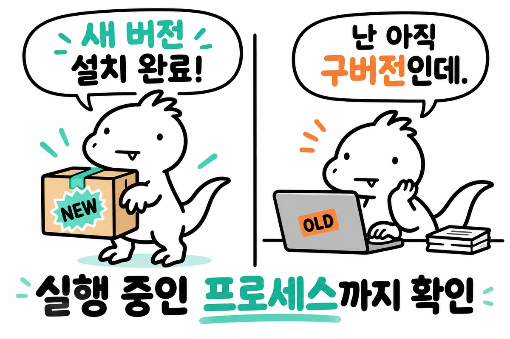
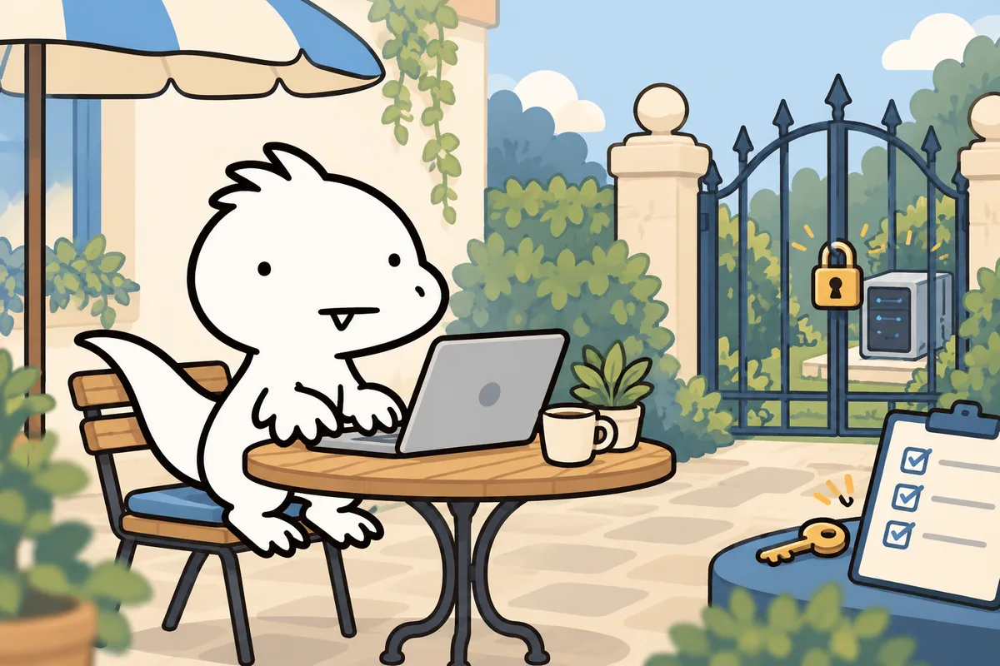

*sshole(CVE-2026-123158, CVSS 8.1)은 알파인 리눅스처럼 musl을 쓰고 PAM 없이 빌드된 sshd에서, 비밀번호 칸이 *인 계정에 257~1024바이트짜리 아무 비밀번호를 넣으면 로그인되는 버그입니다.
해당되면 apk upgrade -U -a 다음 sshd 재시작까지 하세요. 당장 못 하면 PasswordAuthentication no로 비밀번호 로그인을 끕니다. sshd를 돌리지 않는 알파인 도커 컨테이너는 해당되지 않습니다.

프로그램이 "비밀번호 해시 만들어 줘", "파일 열어 줘" 같은 기본 일을 맡기는 C 표준 라이브러리입니다. 리눅스 대부분(우분투·데비안 등)은 glibc를 쓰고, 알파인은 더 작고 가벼운 musl을 씁니다. 같은 함수 이름이라도 실패했을 때 돌려주는 값이 서로 다를 수 있고, 이번 버그가 바로 그 차이에서 나왔습니다.
관리사무소 장부에는 세대마다 비밀번호를 암호처럼 바꾼 값이 적혀 있습니다. "이 집은 비밀번호 없이 카드키만 써요"인 세대는 칸에 그냥 *를 적어 둡니다.
도어락은 누가 누른 번호를 같은 방식으로 바꾼 뒤 장부 값과 비교합니다. 그런데 이 도어락은 너무 긴 번호를 받으면 오류 표시로 *를 띄웁니다. 비교 담당은 그 *를 장부의 *와 맞춰 보고 "같네요" 하며 문을 엽니다. 오류 표시와 "비밀번호 없음" 표시가 하필 같은 글자였던 겁니다.
*라 소금(salt)이 없으면 sshd는 다른 계정의 $5$/$6$ 소금을 빌려 쓰므로, 해시가 있는 계정이 하나는 있어야 이 경로가 열립니다.*인 계정 이름을 알아야 하고, 그 계정이 로그인 가능해야 합니다.root:*지만, OpenSSH 기본값 PermitRootLogin prohibit-password가 root의 비밀번호 로그인을 막습니다.*인 다른 계정이 doas로 root가 될 수 있다면 이 보호막은 소용없다고 알파인 공지가 경고합니다.*가 나왔습니다.공지만 읽으면 "진짜 별표 한 글자가 나와?" 싶어서, 같은 C 코드를 알파인과 데비안 컨테이너에서 돌려 봤습니다. 실행은 AI 에이전트가 제 맥북 Docker Desktop에서 했고, sshd 공격은 하지 않고 crypt()가 돌려주는 값만 확인했습니다. 조건은 같은 소금 $6$saltsalt$에 문자 A를 반복한 입력입니다.
판정은 "비밀번호 칸이 *인 계정과 비교하면 같은가"입니다. 출력값은 2026-11-06 실측 결과를 그대로 넣었고, 이 네 길이 외의 값은 지어내지 않았습니다.
A를 257번 누르는 거였어. 보안 연구가 가끔은 키보드 내구성 테스트 같아.재미있는 건 데비안 쪽입니다. 데비안의 crypt()를 제공하는 libxcrypt도 1024바이트는 거절했지만, 실패 표시가 *0이었습니다. 둘 다 "실패하면 특별한 문자열을 돌려준다"는 같은 방식인데, *0은 *와 같지 않아서 비교에서 걸립니다. 글자 하나 차이로 사고가 나고 안 나고가 갈린 셈입니다.
에이전트가 받은 alpine:3.24 이미지는 이미 3.24.4, openssh-server 10.3_p1-r2(고정 버전)였습니다. 새로 받은 이미지는 고쳐져 있어도, 예전에 받아 돌리고 있는 서버는 그대로입니다.
알파인 공지 기준으로 아래 네 가지가 모두 맞아야 위험합니다. 하나라도 아니면 이 버그로는 들어올 수 없습니다. 내 서버에 맞는 칸을 체크해 보세요.
| 상황 | 판정 | 할 일 |
|---|---|---|
| 알파인 앱 컨테이너, 안에 sshd 없음 | 해당 없음 | 이미지는 평소 주기대로 갱신 |
| 알파인 VM·서버, sshd 켜짐, 비밀번호 로그인 기본값 | 점검 필요 | 아래 5단계 바로 진행 |
| tiny-cloud 이미지(3.18.11~3.24.3)로 만든 인스턴스 | $6$ 해시가 생기는 순간 위험 | 실행 중인 모든 인스턴스 업데이트 또는 비밀번호 로그인 끄기 |
| cloud-init으로 설정한 클라우드 이미지 | 해당 없음(공지 기준) | cloud-init이 PasswordAuthentication no를 씀 |
| 데비안·우분투 등 glibc 배포판 | 이 버그와 무관 | 다른 OpenSSH 업데이트는 별도 확인 |
-alpine이잖아. 그럼 다 털리냐? 아니. 이번 버그의 열쇠는 "그 컨테이너 안에서 sshd가 도느냐"야.실제로 제 맥북의 도커 이미지를 AI 에이전트가 읽기만 해서 훑어봤습니다(2026-11-06). 알파인 기반 이미지가 17개였고, 그중 sshd가 들어 있는 이미지는 0개였습니다. 이번 sshole에는 해당되지 않는다는 뜻입니다. 대신 베이스 버전이 3.19부터 3.24까지 제각각이었고, 정기 지원이 끝난 3.21 이하도 여럿이었습니다. 버그 하나보다 이쪽이 더 오래 남는 숙제였습니다.
docker run --rm --entrypoint sh 이미지:태그 -c 'command -v sshd || echo "sshd 없음"'docker ps --format '{{.Names}} {{.Ports}}'
docker exec 컨테이너이름 pgrep -a sshddocker run --rm --entrypoint cat 이미지:태그 /etc/alpine-releasedocker build --pull -t 내이미지:태그 .
docker compose build --pull && docker compose up -dFROM을 digest(@sha256:…)로 고정했다면 digest도 갱신 — 고정해 둔 digest는 --pull을 해도 옛 이미지 그대로입니다.FROM alpine:3.24처럼 지원 중인 브랜치로 옮겨 두면 다음 사고 때 재빌드 한 번으로 끝납니다.컨테이너 안을 들여다보는 용도라면 docker exec -it 컨테이너이름 sh로 충분합니다. 컨테이너에 sshd를 넣지 않으면 이번 같은 sshd 버그는 애초에 남의 일이 됩니다. SSH 접속이 정말 필요한 구조라면 키 로그인만 쓰고 PasswordAuthentication no를 이미지 설정에 넣어 두세요.
pgrep -a sshd
rc-service sshd statususepam 줄이 안 나올 수 있음. 그땐 passwordauthentication만 보면 됨)
sshd -T | grep -i -E 'passwordauthentication|usepam|permitrootlogin'* 계정 찾기 (root 권한 필요. 디렉터리 서비스 사용자는 여기 안 나와도 해당으로 볼 것)
awk -F: '$2=="*"{print $1}' /etc/shadow$5$/$6$ 해시 개수 (root 권한 필요)
grep -c -E '^[^:]+:\$[56]\$' /etc/shadowapk upgrade -U -a
rc-service sshd restart
apk info -v openssh-server| 알파인 브랜치 | 고정 openssh 버전 |
|---|---|
| edge | 10.6_p2-r0 |
| 3.24 | 10.3_p1-r2 |
| 3.23 | 10.2_p1-r1 |
| 3.22 | 10.0_p1-r11 |
| 3.21 | 9.9_p2-r1 |
| 3.20 | 9.7_p1-r6 |
| 3.19 | 9.6_p1-r3 |
| 3.18 | 9.3_p2-r4 |
| 3.17 | 9.1_p1-r7 |
| 3.16 | 9.0_p1-r6 |
3.21은 2026-11-01에 정기 지원이 끝났지만, 알파인은 3.16까지 고친 패키지를 따로 올려 두었습니다.
먼저 키 로그인이 되는지 확인하고, 지금 붙어 있는 세션은 닫지 마세요. 새 창에서 로그인이 되는 걸 본 뒤에 기존 세션을 닫습니다.
mkdir -p /etc/ssh/sshd_config.d
echo 'PasswordAuthentication no' > /etc/ssh/sshd_config.d/00-no-passwords.conf
sshd -t && rc-service sshd restart
sshd -T | grep -i passwordauthentication # passwordauthentication no 가 나와야 함공지 기준으로 sshd_config.d는 3.19부터 읽습니다. 그보다 오래된 릴리스는 /etc/ssh/sshd_config의 해당 줄을 직접 no로 바꾸세요(공지에 sed 예시가 있습니다).

apk upgrade는 디스크의 파일을 바꿀 뿐, 이미 메모리에서 돌고 있는 sshd를 바꾸지 않습니다. 알파인 공지가 첫 문장부터 "업데이트하고 sshd를 재시작하라"고 강조하는 이유입니다. 재시작한 뒤에는 sshd -T로 실제 적용값을 한 번 더 보세요. 설정 파일에 적어 둔 값과 sshd가 실제로 읽은 값이 다를 수 있습니다.
/var/log/messages에서 비밀번호가 없어야 할 계정(alpine, root, 키 전용 사용자)의 Accepted password 줄authorized_keysgrep 'Accepted password' /var/log/messages| 구분 | 내용 |
|---|---|
| 확인한 것 | 알파인 공식 공지(조건·고정 버전·조치), OpenSSH 10.6p2 릴리스 노트, CVE-2026-123158 레코드, musl·libxcrypt crypt() 반환값 재현 |
| 하지 않은 것 | 실제 sshd 인증 우회 시도, 운영 서버 패치. 재현은 AI 에이전트가 맥북(aarch64) 한 환경에서 실행 |
| 확인 못 한 것 | SNS에 퍼진 "10년 동안 숨어 있던"이라는 표현의 근거, OpenWrt 등 알파인 밖 musl 배포판의 패치 현황 |
| CVE 표기 | 알파인 공지 작성 시점엔 CVE가 없었고, 같은 날 CVE 레코드가 공개됨. 기사마다 다르게 적힌 이유 |

이번 버그에서 가져가는 교훈은 "실패를 문자열로 돌려주는 함수는 언젠가 정상 값과 부딪힌다"입니다. *는 musl에게는 에러였고 장부에게는 "비밀번호 없음"이었습니다. 각자 맞는 약속이 한 비교문에서 만나자 문이 열렸습니다.
클라우드 아키텍트로 일하는 입장에서, 인터넷에 열린 서버는 키 로그인만 쓰고 PasswordAuthentication no를 이미지 기본값으로 두는 게 맞다고 봅니다. 공지도 "둘 중 하나만 해도 구멍이 닫힌다"고 했습니다. OpenSSH가 AI로 찾은 버그 보고가 늘어 릴리스를 더 자주 하겠다고 밝힌 만큼, "재시작까지 포함한 갱신 주기"를 정해 두는 게 점점 중요해질 것 같습니다.